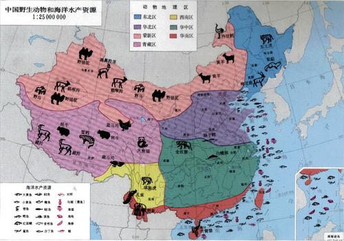

华中区

本区包括四川盆地以东的长江流域。境内地形复杂。西半部主要是山地和高原，东半部主要是平原和丘陵地带。气候温和，雨量充沛，适于作物生长。目前本区原始森林保存已很少，大都成为农耕地区。本区天然植被破坏虽然很严重，但由于其它自然条件很优越，因此动物的种类还是相当丰富的。
本区北邻华北区，南接华南区，西连西南区，彼此间均无显著的自然障碍，故本区特有种类不多，而南北类型相混杂和过渡现象成为本区动物区系的主要特色，与华南区共有的种类尤多，与华北区及西南区共有的居少数。北方种类伸延于此地的，如刺猬、狼、岩松鼠、林姬鼠、田姬鼠、麝等;和华南区共有的南方种类，如猕猴、红脸猴、穿山甲、赤腹松鼠、长吻松鼠、三道眉、竹鼠、豪猪、灵猫和华南虎等。
本区长江中下游有世界著名的水栖兽类--白鱀豚Lipotes vexillifer，是我国洞庭湖的特产。（已灭绝qwq）此外，江豚Neomeris phocaenoides多见于沿海一带，沿长江上溯可达宜昌。
本区鸟类亦呈南北混杂现象，属于古北界的种类有灰喜鹊和攀雀等;属于东洋界的种类更多，如须䴕、山椒鸟、画眉、啄花鸟等。属于本区特产鸟类中，有金鸡、竹鸡、白颈长尾雉、黄腹角雉、小隼等。
爬行类中的扬子鳄Alligator sinensis为我国特产，分布于长江下游，它与北美的密河鳄Alligator mississipiensis同隶一属，而呈不连续分布，是古老种类的遗留。蛇类中，常见的有多种游蛇、锦蛇、鼠蛇，以及眼镜蛇、五步蛇、竹叶青等毒蛇。蜥蜴类中常见的有多疣壁虎、蓝尾石龙子、北草蜥等。两栖类中最普遍的是雨蛙、饰姬蛙、华南湍蛙和沼蛙等。本区由于近代人类活动的影响，一些森林栖息的种类，尤其是大型动物，已显著减少。
在毛皮兽方面，以黄鼬、鼬獾和野兔为主，其次为山獭、貉和灵猫等。有蹄类中麂和小麂的产量较多。在鸟类中，鹭科和雉科有不少种类，可供饰羽用，如金鸡、白鹇、白鹭等。